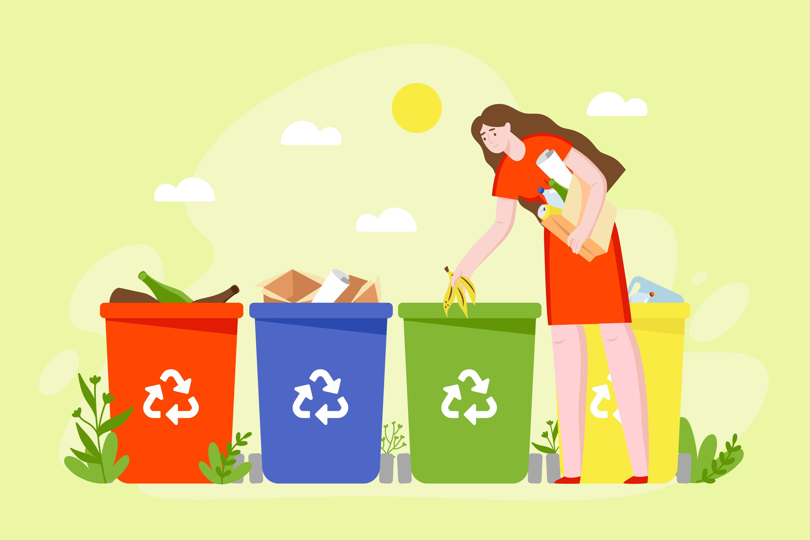

Waste Education
Learn how to properly segregate and recycle waste.
- Plastic Waste
Step 1 : Washing Before
recycling, rinse plastic containers to remove food residue. This helps prevent contamination and ensures the recycling process runs smoothly.
Step 2 : Sorting
Separate plastics based on the type of plastic. Look for the recycling symbol with a number (1-7) on your plastics—this number indicates the type of plastic. Sorting them correctly makes recycling more efficient.

- Organic Waste
Step 1 : Composting
Food scraps like vegetable peelings, fruit cores, and coffee grounds, as well as garden waste like leaves and grass clippings, can be composted. Composting breaks down organic material into nutrient-rich soil, reducing landfill waste and improving soil health.
Step 2 : Process
Start by setting up a compost bin or pile in your yard. Add a mix of green (nitrogen-rich) materials like food scraps and brown (carbon-rich) materials like dry leaves. Turn the compost regularly to aerate it, helping the decomposition process. - Hazardous Waste
Step 1 : Special Collection
Hazardous waste includes items like batteries, chemicals, and certain electronics. These items contain harmful substances that need special handling to prevent environmental damage.
Step 2 : Disposal
Look for local hazardous waste collection programs or facilities. Many communities have designated drop-off days or sites where you can safely dispose of hazardous materials.
